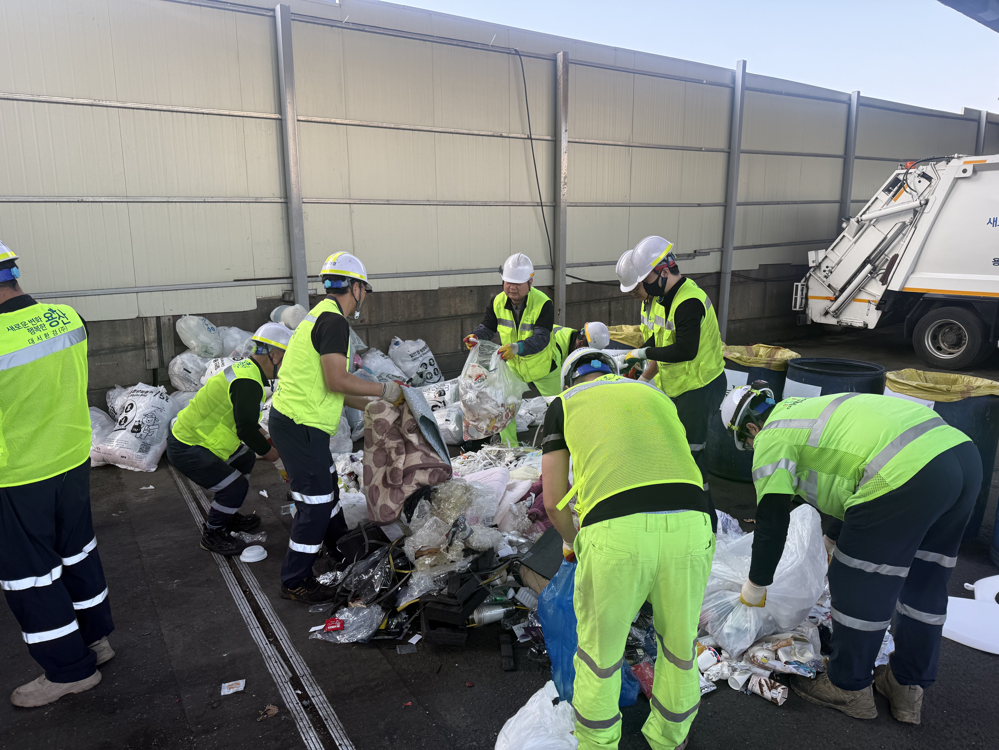

용산구, 서울시 생활폐기물 감량 평가 25개 자치구 1위…시비 3억 확보
감량·분리배출 참여도 모두 1위, 수도권 직매립 금지 대비 첫 성과

[시사포커스 / 김재록 기자] 서울 용산구(구청장 김경대)가 서울시가 올해 처음 도입한 '자치구 생활폐기물 감량·재활용 2차 성과평가'에서 25개 자치구 중 1위를 차지하며 '최우수구'로 선정됐다고 5일 밝혔다. 이번 평가는 수도권매립지 생활폐기물 직매립 금지에 대응하기 위해 서울시가 올해 도입한 제도로, ▲생활폐기물 감량 실적 ▲분리배출 참여도 ▲시민 실천 노력 ▲자치구 특화사업 등 4개 분야를 종합 평가한다. 용산구는 생활폐기물 감량과 분리배출 참여도 부문에서 모두 1위를 기록했으며, 이에 따라 시비 성과급(인센티브) 3억 원을 확보했다.
용산구는 생활폐기물 수집·운반 대행업체와 협력해 종량제봉투 파봉 및 자체 선별작업을 실시함으로써 재활용품 수거율을 높여왔다. 또한 관내 초등학생을 대상으로 자원순환 체험교육 프로그램 '집 나간 쓰레기의 여행'을 총 10회 운영해 미래세대의 환경의식 함양에도 힘써왔다. 이와 함께 올바른 분리배출 문화 확산을 위해 '한눈에 보는 생활쓰레기 분리배출 안내문'을 국문·영문 2종의 생활밀착형 자석 형태로 제작·배포했다. 김경대 용산구청장은 "이번 최우수구 선정은 생활폐기물 감량과 올바른 분리배출 실천에 함께해 주신 구민 여러분의 적극적인 참여가 만든 뜻깊은 성과"라고 말했다.
용산구는 하반기에도 가로구간 재활용 분리수거함 설치, 투명 페트병 무인 회수기 도입 등 생활폐기물 감량과 자원재활용 활성화를 위한 사업을 지속 추진할 계획이다. 이번에 확보한 시비 3억 원은 청소차량 교체를 비롯한 자원순환 기반시설 확충과 감량사업 추진에 투입해 효율적이고 안정적인 자원순환 체계를 구축하는 데 활용할 예정이다. 구는 직매립 금지 전면 시행에 맞춰 주민이 일상에서 쉽게 실천할 수 있는 생활밀착형 자원순환 정책을 지속적으로 확대해 나가겠다고 밝혔다.